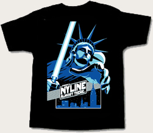

That day of days is finally upon us! In just a few short hours the New York City line up for "Star Wars: Episode III - Revenge of the Sith" will begin!
Join us one last time as we revel in all things "Star Wars" and help raise money for our charity, the Starlight Starbright Children's Foundation. All donations will go towards Starlight's Fun Center Program. Fun Centers are mobile entertainment units which contain a flat-screen TV, DVD player and Nintendo GameCube built into an adjustable cart that rolls up to a child's hospital bed.
If you haven't signed up then what are you waiting for? You must join us! Signup by clicking here.
Also, any NYLine Member raising a minimum of $60 in Starlight Starbright donations will receive their very own, exclusive, NYLine III T-shirt! Bring your collected donations to the line this weekend, and you can go home with one of these:
For a better view of the fine-looking artwork gracing this baby, click here.
To begin signing up sponsors, download the Starlight Sponsor Pledge Form.
See you on the pavement and May the Force be with you!
Only 18 more days to go!
{kind=link}